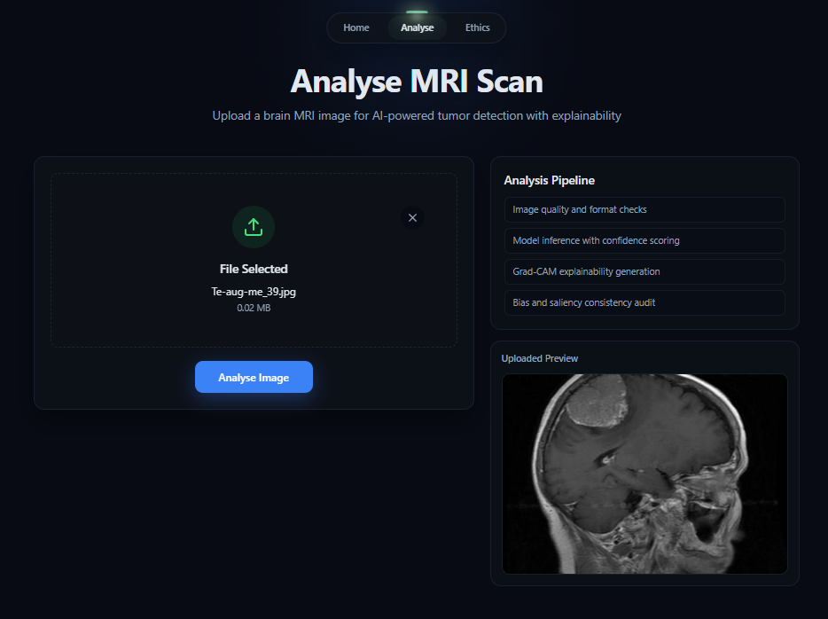
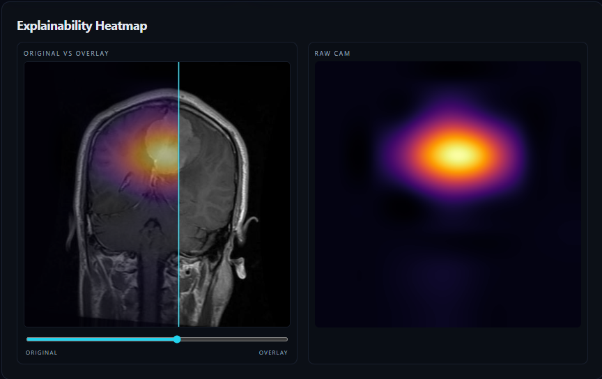
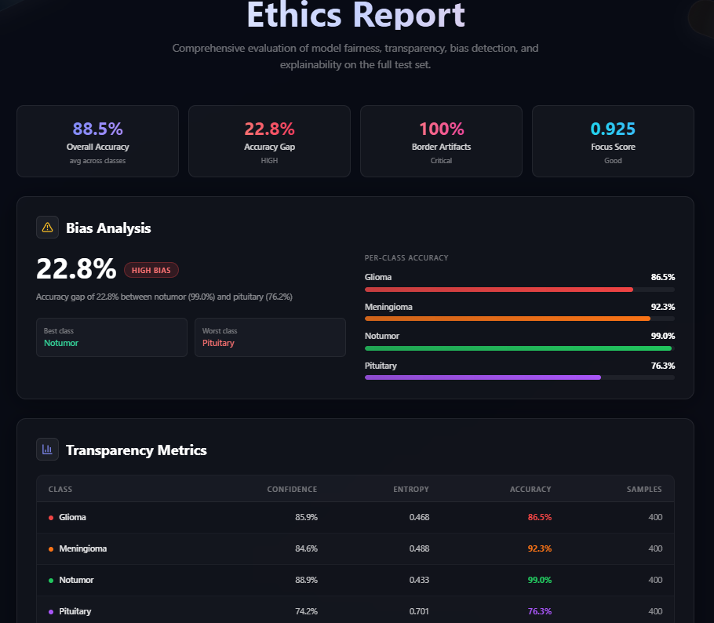

EfficientNet-B0 is used as the base classifier because it is a parameter-efficient model with a good accuracy-to-compute balance. Grad-CAM++ generates explainable heatmaps for visual verification.
Workflow:The API provides MRI prediction with probabilities, Grad-CAM++ overlays, and a bias audit. The ethics report includes transparency metrics, a fairness summary, a saliency audit, a model card, and mitigations.


